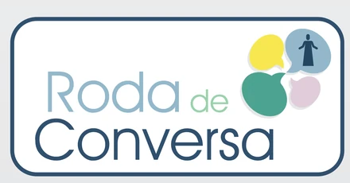

Roda de Conversa
Encontro destinado a acolher e orientar pais e responsáveis, com discussão em grupo sobre a educação de crianças e jovens.
Especialmente criada para acolher e orientar os pais ou responsáveis que trazem os seus filhos para a Evangelização, a Roda de Conversa visa discutir em grupo assuntos referentes à difícil tarefa de educar crianças e jovens com equilíbrio e amorosidade.
A atividade tem formato de conversa, e não de exposição. Um tema é proposto e o grupo o desenvolve, à luz do Evangelho e da orientação espírita sobre a família e a educação.
Quem pode participar
O convite dirige-se principalmente aos pais e responsáveis das crianças e jovens da Evangelização. A reunião é, contudo, aberta a qualquer pessoa interessada nos temas tratados, tenha ou não filhos matriculados na casa.
A participação na conversa é facultativa: é possível acompanhar os encontros apenas ouvindo, pelo tempo que se desejar.
